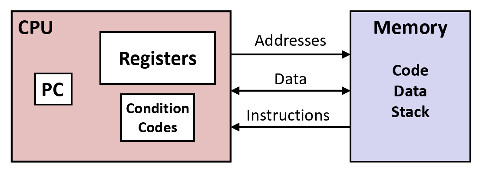
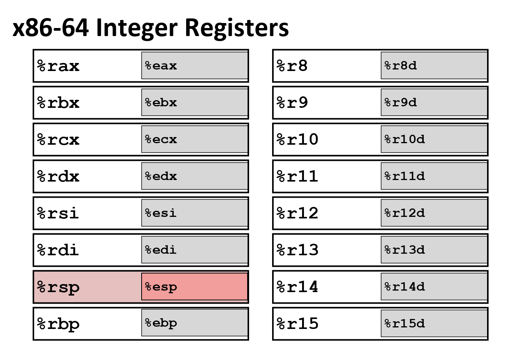
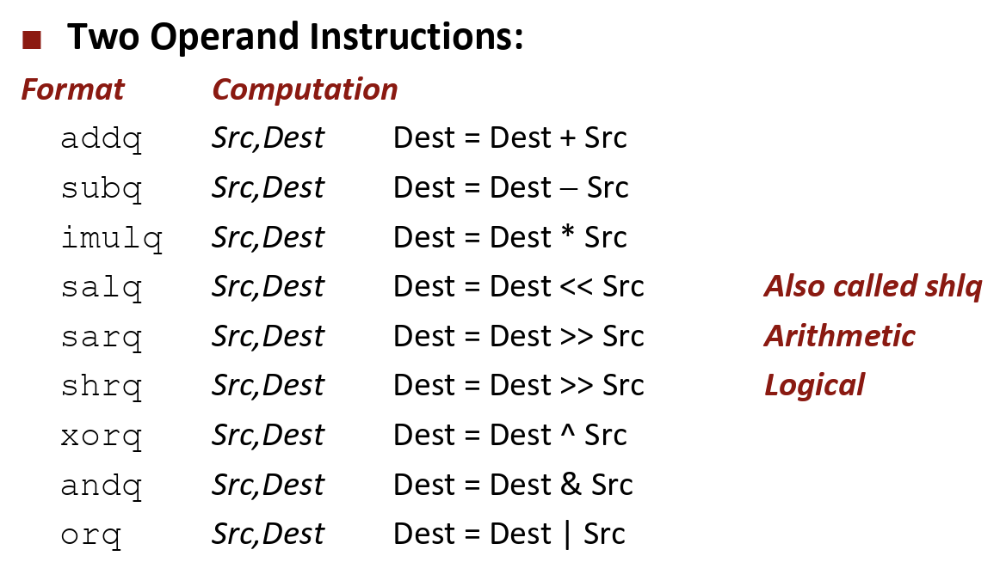
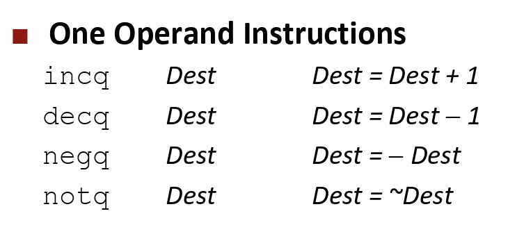

从C语言到机器码
C语言是一种高级语言, 其内容更接近自然语言, 而机器执行的是显然不是这些"自然语言", 而是一些类似00100011的二进制字符串. 所以在执行一个由C语言编写的程序之前, 我们必须先通过"编译器"将其转化为机器能够执行的代码, 也就是所谓的机器码.
事实上, 在半个世纪之前, 程序员们只能使用机器码编写程序. 为了避免直接编写二进制字符串, 人们发明了汇编语言. 汇编语言和机器码是一一对应的. 可以说, 汇编语言是"可读的机器码".
汇编语言的规定是由ISA(指令集架构)给出的. ISA规定了汇编语言这个层面的语法和语义, 这些规定是和硬件特征紧密相关的. 由于不同的硬件支持的ISA并不相同, 所以同一段C代码在不同的硬件上可能产生不同的机器码.
汇编语言的操作对象也并非直接是机器的硬件, 而是对硬件的抽象. 具体而言, 我们认为汇编语言操作的是CPU和Memory.

汇编语言可见(可操作)的部分包括
- CPU
- 寄存器: 用于保存一些被频繁使用的数据
- PC: 指向下一条指令的地址
- 条件码: 用于保存上一条指令的结果, 用于判断分支
- Memory: 包括程序, 数据, 堆, 栈等
x86-64包括16个整数寄存器, 更具体的, 一共有8个有名字的寄存器和8个带数字的寄存器. 每个寄存器的大小为8个字节, 当然, 也可以访问其低4个字节. 在下图中, 前面的表示8字节, 后面的表示低4字节.

汇编语言可执行的操作包括
- 在寄存和内存之间移动数据
- 执行算术和逻辑运算
- 控制程序的执行(比如分支之类)
接下来我们将分别介绍这些操作.
汇编基础(x86-64)
数据的移动
汇编码的格式为
movq Source, Dest
其中的操作数可能是
- 立即数: 整数常量, 形式如
$0xf``0b1001 - 寄存器: 寄存器中的值, 形式如
%rax - 内存: 内存中的值, 形式如
(%rax)
事实上允许的移动方式只有五种
并不允许直接Mem->Mem, 而是必须先将Mem->Reg, 然后Reg->Mem.
一个简单的例子
void swap(long *xp, long *yp) {
long t0 = *xp; long t1 = *yp; *xp = t1; *yp = t0;
}
swap:
movq (%rdi), %rax # t0 = *xp
movq (%rsi), %rdx # t1 = *yp
movq %rdx, (%rdi) # *xp = t1
movq %rax, (%rsi) # *yp = t0
ret
(你的机器当然可能产生不一样的机器码/汇编代码)
一个有意思的问题是内存是如何寻址的. 完整的寻址模式是
D(Rb, Ri, S) # Mem[Reg[Rb] + S * Reg[Ri] + D]
S一般是1, 2, 4, 8(为何如此? 思考一下常用的数据类型!)
寻址模式也常用于算术计算. 我们先了解一下leaq指令
leaq Source, Dest
leaq指令的功能是计算Source表示的地址, 然后将其赋值给Dest. 其中Source为寻址模式. 类似C语言中的p=&x[i]之类. 我们利用寻址模式的特性可以进行一些代数运算
leaq (%rdi, %rdi, 2), %rax # t = xp + 2 * xp
salq $2, %rax # t = t * 4
上述的意义是将%rdi的值乘12, 然后赋值给%rax.
有必要解释一下: ()代表使用寻址模式进行计算, 但在movq中会去读取对应地址上的值, 在leaq中则会直接使用地址(类似C语言&x[i]).
⚠️warning: 在intel的文档中, `Source`和`Dest`的顺序与此处的顺序相反, 我们在此使用的是Linux中的顺序.
算术运算
一些常见的双操作数指令

这些指令不区分int和uint类型, 因为二者的操作在代码上是一致的.
一些常见的单操作数指令
